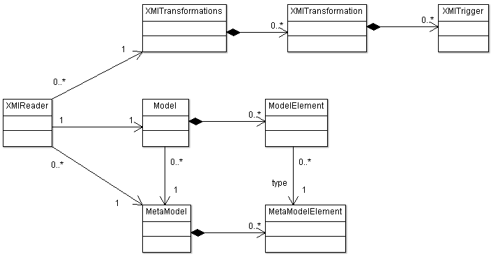

See: Description
| Interface | Description |
|---|---|
| XMIReader.ProgressMessageHandler |
Message handler for progress messages of the XMI parser.
|
| Class | Description |
|---|---|
| MetaModel |
Represents an SDMetrics metamodel.
|
| MetaModelElement |
Represents an element type of the SDMetrics metamodel.
|
| Model |
Container for the model elements of the UML design to be analyzed.
|
| ModelElement |
Represents a model element of a model.
|
| XMIReader |
Reads an XMI source file, processing it as specified by an XMI transformation
file.
|
| XMITransformations |
Container and XML parser for XMI transformations.
|

Tutorial - how to parse an XMI file and access the model elements
The following code snippets take you through the steps to parse an XMI file, and write out all model elements extracted from the XMI file to the console.
import java.util.Collection; import java.util.List; import sdmetrics.model.MetaModel; import sdmetrics.model.MetaModelElement; import sdmetrics.model.Model; import sdmetrics.model.ModelElement; import sdmetrics.model.XMIReader; import sdmetrics.model.XMITransformations; import sdmetrics.util.XMLParser;
String metaModelURL = ...; // metamodel definition to use String xmiTransURL = ...; // XMI tranformations to use String xmiFile = ...; // XMI file with the UML model
You do not have to use the SAX parser provided by classXMLParserparser = new XMLParser();MetaModelmetaModel = new MetaModel(); parser.parse(metaModelURL, metaModel.getSAXParserHandler());
XMLParser,
you may just as well use a org.xml.sax.XMLReader that you created yourself.
XMITransformations trans=new XMITransformations(metaModel);
parser.parse(xmiTransURL, trans.getSAXParserHandler());
Modelmodel = new Model(metaModel);XMIReaderxmiReader = new XMIReader(trans, model); parser.parse(xmiFile, xmiReader);
String[] filters = { "#.java", "#.javax", "#.org.xml" };
model.setFilter(filters, false, true);
At this point, you can already start calculating metrics for the elements in the model.
The tutorial for package com.sdmetrics.metrics describes how.
The remainder of this tutorial shows how to access the elements in the model.
// iterate over all model element types in the metamodel for (MetaModelElementtype : metaModel) { System.out.println("Elements of type: " + type.getName()); // iterate over all model elements of the current type List<ModelElement> elements = model.getAcceptedElements(type); for (ModelElementme : elements) { System.out.println(" Element: " + me.getFullName() + " "); // write out the value of each attribute of the element Collection<String> attributeNames = type.getAttributeNames(); for (String attr : attributeNames) { System.out.print(" Attribute '" + attr); if (type.isSetAttribute(attr)) System.out.println("' has set value " + me.getSetAttribute(attr)); else if (type.isRefAttribute(attr)) { System.out.print("' references "); ModelElement referenced = me.getRefAttribute(attr); System.out.println((referenced == null) ? "nothing" : referenced.getFullName()); } else System.out.println("' has value: " + me.getPlainAttribute(attr)); } } }